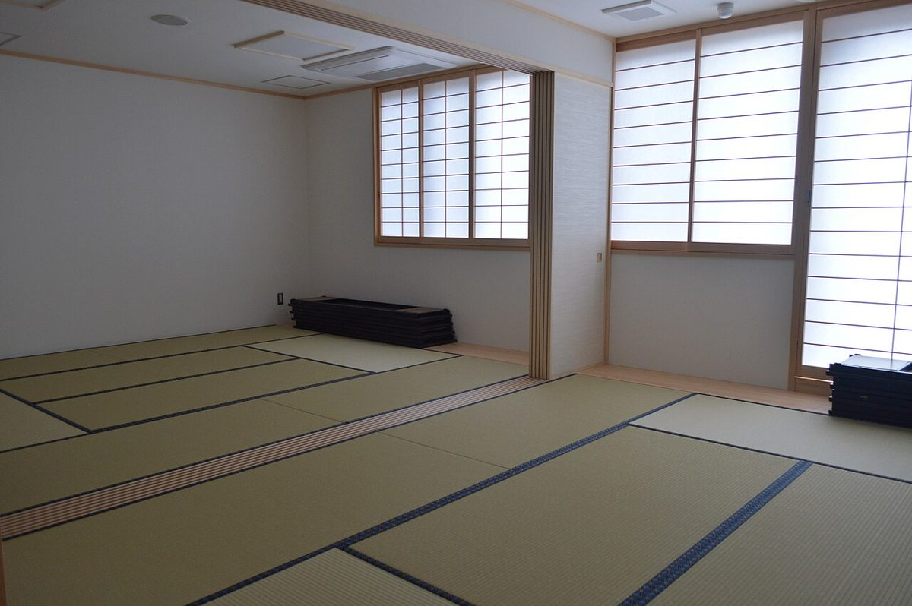
お店の由来・想い
長い夢と、25年空いていた家
店主の佐々木優子さんは、子どものころからカフェを開くのが夢だったと、2022年3月の河北新報の記事で紹介されています。子育てや介護を経て、一度は年齢的にあきらめかけていたそうです。
2019年に地域のサークルに参加し、周りの方々に背中を押されて、お弁当づくりやカフェでの仕事を経験。自信がついて開業に至ったと伝えられています。
お店は、25年ほど空き家だった木造2階建ての家を購入し、内装の仕事をするご主人と一緒に改装したもの。装飾のある柱や欄間を残した和室が、現代的に仕上げられていると報じられています。「地域の人が集まる場にしたい」という言葉も紹介されています。
※店名「ユーカリ」の意味や由来は確認できていません。下の植物の写真は、制作側のイメージです。
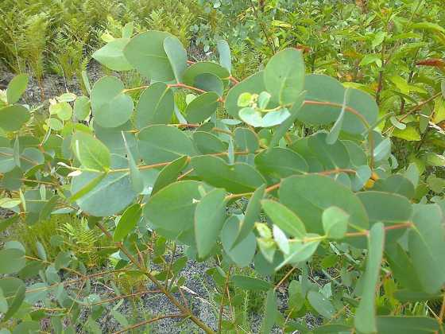
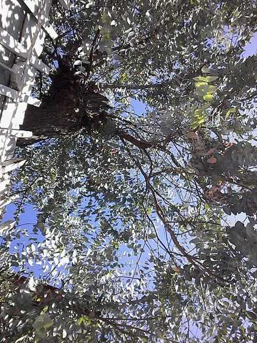
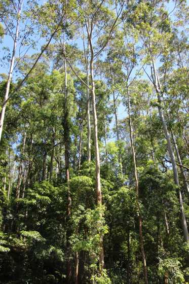
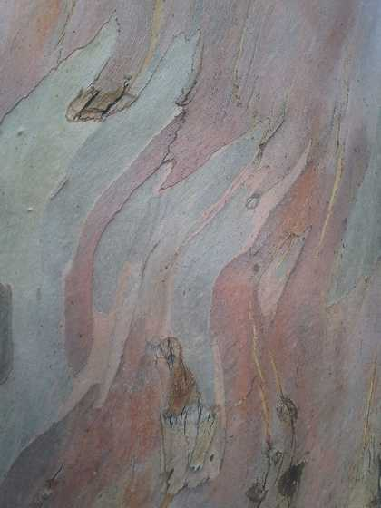
メニュー
畑の野菜と、手づくりの味
報道・ブログ等によると、地元で育てた野菜を使い、味噌や梅干しも自家製とのこと。ランチは複数の小皿が並ぶワンプレート(のちに「一汁九菜プレート」と紹介されています)で、コーヒーやケーキもあります。内容は日替わり・季節で変わるため、最新はInstagramでご確認ください。


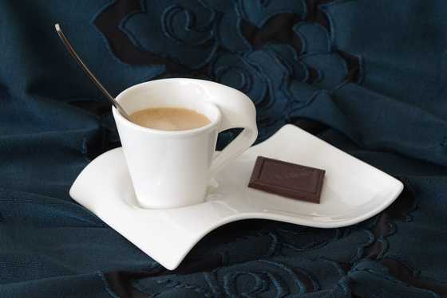
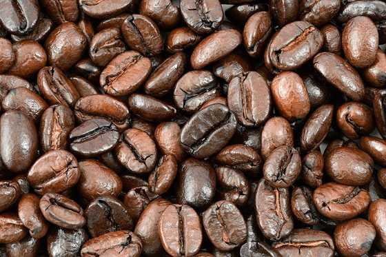
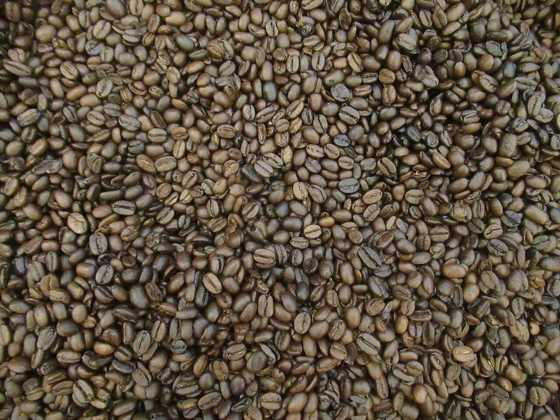
コンセプト
古い家に、あたらしい灯を。
長く空いていた家と、長く温めていた夢。ふたつが重なって生まれたお店、というところから、このページは落ち着いた深い緑と土の色、明朝系の見出しで作っています。写真は葉や木々のイメージです。
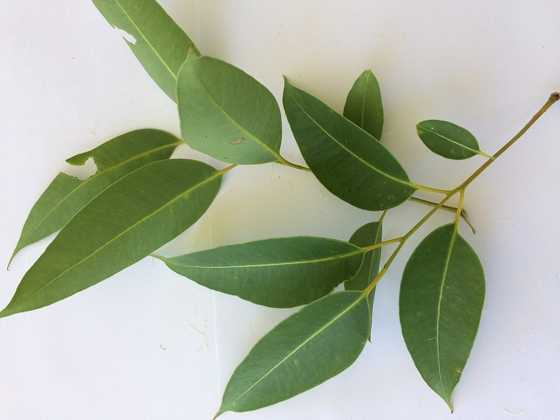
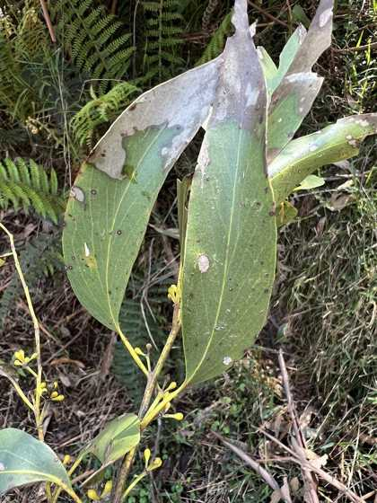
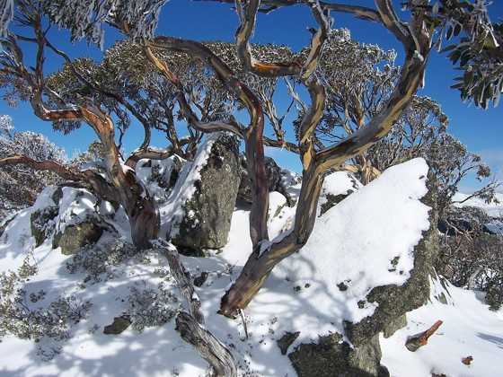
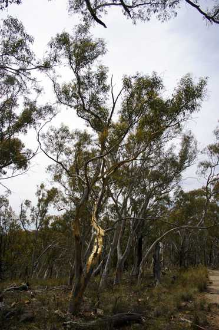
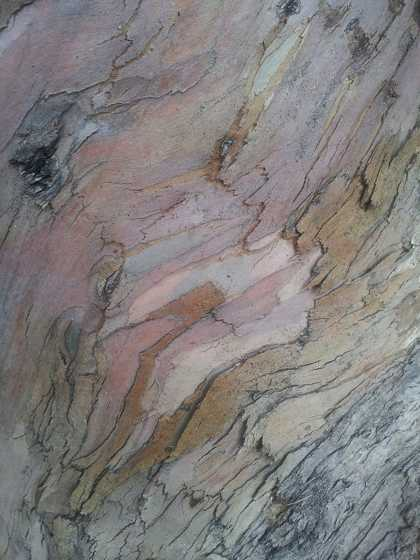
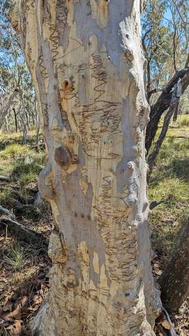
口コミ
お客様の声(イメージ例)
以下は制作側が作った例文で、実在のお客様の声ではありません。
古い家の和室でゆっくりできました。お野菜のおかずがたくさんで、お腹も心も満たされました。
食後のケーキとコーヒーまで、のんびり過ごせる時間が心地よかったです。
周りが静かで、友人との話が弾みました。また季節を変えて行きたいです。